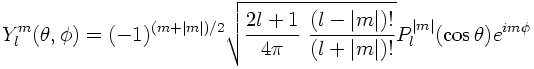
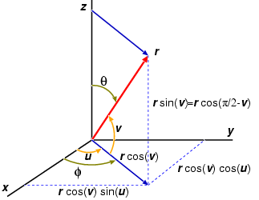
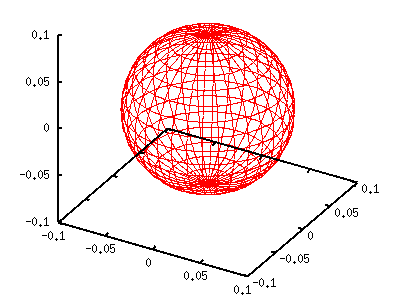
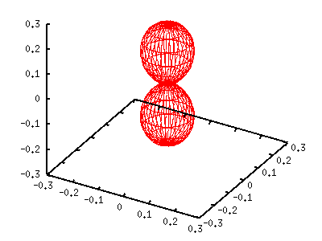
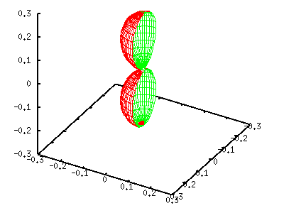

- not so Frequently Asked Questions -
update 2004/12/04
|
|
- not so Frequently Asked Questions - update 2004/12/04
|
Spherical HarmonicsThe spherical harmonics in the polar coordinate Y[lm](theta,phi) is given by: 
where P[lm] is the associated Legendre function. The value l is integer, l=0,1,2,3... For each l value, m takes the value of m=-l,-l+1,...l-1,l so that there are 2l+1 different m values. A square of this function is normalized to unity, < Y[lm] | Y[l'm'] > = delta(ll') delta(m,m'). The theta runs from 0 to pi, while phi runs from 0 to 2pi.  In the gnuplot parametric representation, the angle u is the same as phi, while the definition of theta is different from v. From the left figure, theta = pi/2 - v, we get: cos(theta)=sin(v) sin(theta)=cos(v) The simplest spherical harmonics can be obtained by setting l=0 and m=0. This yields a constant value of 1/sqrt(4pi). A square of this, |Y[00]|^2=1/4pi, is of course constant, and this is a sphere with the radius of 1/4pi. It is easy to draw this function with gnuplot. The procedure is the same as the previous page.
gnuplot> set parametric
dummy variable is t for curves, u/v for surfaces
gnuplot> set angle degree
gnuplot> set urange [0:360]
gnuplot> set vrange [-90:90]
gnuplot> set isosample 36,18
gnuplot> set ticslevel 0
gnuplot> set size 0.65,1.0
gnuplot> a=1.0/(4*pi)
gnuplot> fx(u,v)=cos(u)*cos(v)
gnuplot> fy(u,v)=sin(u)*cos(v)
gnuplot> fz(v)=sin(v)
gnuplot> splot a*fx(u,v),a*fy(u,v),a*fz(v)

The left graph is a square of Y[00], which is a sphere whose center is the origin and the radius of 1/4pi. Since m=0, the exp(-im phi) term disappears and the function is independent of phi. The spherical harmonics becomes real when m is even. If m is an odd number the function has an imaginary term. Next, we consider the case of l=1 and m=0. This function becomes Y(theta)=sqrt(3/4pi)cos(theta). As shown above, cos(theta) is given by sin(v). The function can be plotted when the x,y,z coordinates are multiplied by sin(v). In the following example we show |Y[10]|^2=3/4pi cos^2(theta). gnuplot> a=3.0/(4*pi) gnuplot> g(v)=sin(v)*sin(v) gnuplot> splot a*g(v)*fx(u,v),a*g(v)*fy(u,v),a*g(v)*fz(v) The cross-section of spherical harmonics can be shown by setting the u range, [0:180], and use the hidden3d option. gnuplot> set urange [0:180] gnuplot> set hidden3d gnuplot> splot a*g(v)*fx(u,v),a*g(v)*fy(u,v),a*g(v)*fz(v) from Dr.Nakamura of TUS. Thanks !
 |